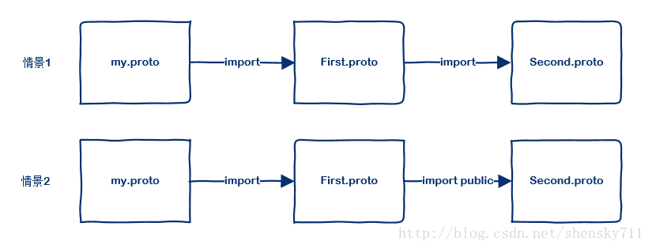

<!DOCTYPE HTML>
<html lang="zh-CN">
<head><meta name="generator" content="Hexo 3.8.0">
    <!--Setting-->
    <meta charset="UTF-8">
    <meta name="viewport" content="width=device-width, user-scalable=no, initial-scale=1.0, maximum-scale=1.0, minimum-scale=1.0">
    <meta http-equiv="X-UA-Compatible" content="IE=Edge,chrome=1">
    <meta http-equiv="Cache-Control" content="no-siteapp">
    <meta http-equiv="Cache-Control" content="no-transform">
    <meta name="renderer" content="webkit|ie-comp|ie-stand">
    <meta name="apple-mobile-web-app-capable" content="我的博客 - blog">
    <meta name="apple-mobile-web-app-status-bar-style" content="black">
    <meta name="format-detection" content="telephone=no,email=no,adress=no">
    <meta name="browsermode" content="application">
    <meta name="screen-orientation" content="portrait">
    <link rel="dns-prefetch" href="https://lives.xtcgch.ink">
    <!--SEO-->

<meta name="description" content="脑容量不够，笔记来凑">


<meta name="robots" content="all">
<meta name="google" content="all">
<meta name="googlebot" content="all">
<meta name="verify" content="all">
    <!--Title-->


<title>开源之protobuf | 我的博客 - blog</title>


    <link rel="alternate" href="/atom.xml" title="我的博客 - blog" type="application/atom+xml">


    <link rel="icon" href="https://blog.xtcgch.ink/img/background/海绵宝宝.ico">

    


<link rel="stylesheet" href="/css/bootstrap.min.css?rev=3.3.7">
<link rel="stylesheet" href="/css/font-awesome.min.css?rev=4.5.0">
<link rel="stylesheet" href="/css/style.css?rev=@@hash">


    


    

</head>

</html>
<!--[if lte IE 8]>
<style>
    html{ font-size: 1em }
</style>
<![endif]-->
<!--[if lte IE 9]>
<div style="ie">你使用的浏览器版本过低，为了你更好的阅读体验，请更新浏览器的版本或者使用其他现代浏览器，比如Chrome、Firefox、Safari等。</div>
<![endif]-->

<body>
    <header class="main-header" style="background-image:url(https://blog.xtcgch.ink/img/head-bg.jpg)">
    <div class="main-header-box">
        <a class="header-avatar" href="/" title="unistd68">
            
        </a>
        <div class="branding">
        	<!--<h2 class="text-hide">Snippet主题,从未如此简单有趣</h2>-->
            
                <h2> 脑容量不够，笔记来凑 </h2>
            
    	</div>
    </div>
</header>
    <nav class="main-navigation">
    <div class="container">
        <div class="row">
            <div class="col-sm-12">
                <div class="navbar-header"><span class="nav-toggle-button collapsed pull-right" data-toggle="collapse" data-target="#main-menu" id="mnav">
                    <span class="sr-only"></span>
                        <i class="fa fa-bars"></i>
                    </span>
                    <a class="navbar-brand" href="https://lives.xtcgch.ink">我的博客 - blog</a>
                </div>
                <div class="collapse navbar-collapse" id="main-menu">
                    <ul class="menu">
                        
                            <li role="presentation" class="text-center">
                                <a href="/"><i class="fa "></i>主页</a>
                            </li>
                        
                            <li role="presentation" class="text-center">
                                <a href="/categories/原理/"><i class="fa "></i>原理</a>
                            </li>
                        
                            <li role="presentation" class="text-center">
                                <a href="/categories/实战/"><i class="fa "></i>实战</a>
                            </li>
                        
                            <li role="presentation" class="text-center">
                                <a href="/categories/开源/"><i class="fa "></i>开源</a>
                            </li>
                        
                            <li role="presentation" class="text-center">
                                <a href="/categories/其他/"><i class="fa "></i>其他</a>
                            </li>
                        
                            <li role="presentation" class="text-center">
                                <a href="/archives/"><i class="fa "></i>时间轴</a>
                            </li>
                        
                    </ul>
                </div>
            </div>
        </div>
    </div>
</nav>
    <section class="content-wrap">
        <div class="container">
            <div class="row">
                <main class="col-md-8 main-content m-post">
                    <p id="process"></p>
<article class="post">
    <div class="post-head">
        <h1 id="开源之protobuf">
            
	            开源之protobuf
            
        </h1>
        <div class="post-meta">
    
    
    <span class="categories-meta fa-wrap">
        <i class="fa fa-folder-open-o"></i>
        <!-- <a href="https://blog.xtcgch.ink/categories/原理"> -->
        <a href="/categories/原理">
            原理
        </a>
    </span>
    

    
    <span class="fa-wrap">
        <i class="fa fa-tags"></i>
        <span class="tags-meta">
            
                
                    <!-- <a href="https://blog.xtcgch.ink/tags/PROTOBUF" title='PROTOBUF'> -->
                    <a href="/tags/PROTOBUF" title="PROTOBUF">
                        PROTOBUF
                    </a>
                
            
        </span>
    </span>
    

    
        
        <span class="fa-wrap">
            <i class="fa fa-clock-o"></i>
            <span class="date-meta">2020/12/01</span>
        </span>
        
    
</div>

            
            
            <p class="fa fa-exclamation-triangle warning">
                本文于<strong>366</strong>天之前发表，文中内容可能已经过时。
            </p>
        
    </div>
    
    <div class="post-body post-content">
        <p><strong>摘要：</strong>记录protobuf的使用知识。</p>
<a id="more"></a>
<hr>
<h2 id="脑图"><a href="#脑图" class="headerlink" title="脑图"></a>脑图</h2><p></p>
<hr>
<h2 id="前言"><a href="#前言" class="headerlink" title="前言"></a><table><tr><td bgcolor="#C7C7C7">前言</td></tr></table></h2><hr>
<h2 id="protobuf安装"><a href="#protobuf安装" class="headerlink" title="protobuf安装"></a><table><tr><td bgcolor="#C7C7C7">protobuf安装</td></tr></table></h2><hr>
<h2 id="protobuf2"><a href="#protobuf2" class="headerlink" title="protobuf2"></a><table><tr><td bgcolor="#C7C7C7">protobuf2</td></tr></table></h2><hr>
<h2 id="protobuf3"><a href="#protobuf3" class="headerlink" title="protobuf3"></a><table><tr><td bgcolor="#C7C7C7">protobuf3</td></tr></table></h2><h3 id="变化"><a href="#变化" class="headerlink" title="变化"></a><font color="#0000FF">变化</font></h3><ol>
<li>字段前取消了required和optional两个关键字，目前可用的只有repeated关键字</li>
<li>不可以现设置默认值了<ul>
<li>string默认为空串</li>
<li>枚举默认为第一个枚举定义的第一个值。并且必须是0</li>
<li>bytes默认为空bytes</li>
<li>bool默认为false</li>
<li>数字类型默认为0</li>
</ul>
</li>
</ol>
<h3 id="类型对应表"><a href="#类型对应表" class="headerlink" title="类型对应表"></a><font color="#0000FF">类型对应表</font></h3><table>
<thead>
<tr>
<th style="text-align:left">.proto Type</th>
<th style="text-align:left">C++ Type</th>
<th>描述</th>
</tr>
</thead>
<tbody>
<tr>
<td style="text-align:left">double</td>
<td style="text-align:left">double</td>
<td></td>
</tr>
<tr>
<td style="text-align:left">float</td>
<td style="text-align:left">float</td>
<td></td>
</tr>
<tr>
<td style="text-align:left">int32</td>
<td style="text-align:left">int32</td>
<td></td>
</tr>
<tr>
<td style="text-align:left">int64</td>
<td style="text-align:left">int64</td>
<td></td>
</tr>
<tr>
<td style="text-align:left">uint32</td>
<td style="text-align:left">uint32</td>
<td></td>
</tr>
<tr>
<td style="text-align:left">uint64</td>
<td style="text-align:left">uint64</td>
<td></td>
</tr>
<tr>
<td style="text-align:left">sint32</td>
<td style="text-align:left">int32</td>
<td>可变长度</td>
</tr>
<tr>
<td style="text-align:left">sint64</td>
<td style="text-align:left">int64</td>
<td>可变长度</td>
</tr>
<tr>
<td style="text-align:left">fixed32</td>
<td style="text-align:left">uint32</td>
<td>固定4字节</td>
</tr>
<tr>
<td style="text-align:left">fixed64</td>
<td style="text-align:left">uint64</td>
<td>固定8字节</td>
</tr>
<tr>
<td style="text-align:left">sfixed32</td>
<td style="text-align:left">int32</td>
<td>固定4字节</td>
</tr>
<tr>
<td style="text-align:left">sfixed64</td>
<td style="text-align:left">int64</td>
<td>固定8字节</td>
</tr>
<tr>
<td style="text-align:left">bool</td>
<td style="text-align:left">bool</td>
<td></td>
</tr>
<tr>
<td style="text-align:left">string</td>
<td style="text-align:left">string</td>
<td></td>
</tr>
<tr>
<td style="text-align:left">bytes</td>
<td style="text-align:left">string</td>
<td></td>
</tr>
</tbody>
</table>
<h3 id="代码编译"><a href="#代码编译" class="headerlink" title="代码编译"></a><font color="#0000FF">代码编译</font></h3><figure class="highlight plain"><table><tr><td class="gutter"><pre><span class="line">1</span><br></pre></td><td class="code"><pre><span class="line">protoc --proto_path=IMPORT_PATH --cpp_out=DST_DIR path/to/file.proto</span><br></pre></td></tr></table></figure>
<p>解释：</p>
<ul>
<li>proto_path：当proto文件中使用import时指定的导入文件的位置</li>
<li>cpp_out：c++版本的protocol的输出目录</li>
<li>path/to/file.proto：要编译的proto文件</li>
</ul>
<h3 id="语法"><a href="#语法" class="headerlink" title="语法"></a><font color="#0000FF">语法</font></h3><ul>
<li>头部</li>
</ul>
<figure class="highlight plain"><table><tr><td class="gutter"><pre><span class="line">1</span><br><span class="line">2</span><br></pre></td><td class="code"><pre><span class="line">// 指定使用proto3，如果不指定的话，编译器会使用proto2去编译</span><br><span class="line">syntax = &quot;proto3&quot;; //[proto2|proto3]</span><br></pre></td></tr></table></figure>
<ul>
<li><p>标准类型定义</p>
<figure class="highlight plain"><table><tr><td class="gutter"><pre><span class="line">1</span><br><span class="line">2</span><br><span class="line">3</span><br><span class="line">4</span><br><span class="line">5</span><br><span class="line">6</span><br><span class="line">7</span><br></pre></td><td class="code"><pre><span class="line">message SearchRequests &#123;</span><br><span class="line">    // 定义SearchRequests的成员变量，需要指定：变量类型、变量名、变量Tag</span><br><span class="line">    string query = 1;</span><br><span class="line">    int32 page_number = 2;</span><br><span class="line">    bool has_key = 3;</span><br><span class="line">    float money = 4;</span><br><span class="line">&#125;</span><br></pre></td></tr></table></figure>
</li>
<li><p>message 嵌套</p>
</li>
</ul>
<figure class="highlight plain"><table><tr><td class="gutter"><pre><span class="line">1</span><br><span class="line">2</span><br><span class="line">3</span><br><span class="line">4</span><br><span class="line">5</span><br><span class="line">6</span><br><span class="line">7</span><br><span class="line">8</span><br></pre></td><td class="code"><pre><span class="line">message SearchResponse &#123;</span><br><span class="line">    message Result &#123;</span><br><span class="line">        string url = 1;</span><br><span class="line">        string title = 2;</span><br><span class="line">        repeated string snippets = 3;</span><br><span class="line">    &#125;</span><br><span class="line">    repeated Result results = 1;</span><br><span class="line">&#125;</span><br></pre></td></tr></table></figure>
<p>或<br><figure class="highlight plain"><table><tr><td class="gutter"><pre><span class="line">1</span><br><span class="line">2</span><br><span class="line">3</span><br><span class="line">4</span><br><span class="line">5</span><br><span class="line">6</span><br><span class="line">7</span><br><span class="line">8</span><br><span class="line">9</span><br></pre></td><td class="code"><pre><span class="line">message Result &#123;</span><br><span class="line">    string url = 1;</span><br><span class="line">    string title = 2;</span><br><span class="line">    repeated string snippets = 3;</span><br><span class="line">&#125;</span><br><span class="line"></span><br><span class="line">message SearchResponse &#123;</span><br><span class="line">	repeated Result results = 1;</span><br><span class="line">&#125;</span><br></pre></td></tr></table></figure></p>
<ul>
<li>枚举</li>
</ul>
<figure class="highlight plain"><table><tr><td class="gutter"><pre><span class="line">1</span><br><span class="line">2</span><br><span class="line">3</span><br><span class="line">4</span><br><span class="line">5</span><br><span class="line">6</span><br><span class="line">7</span><br><span class="line">8</span><br><span class="line">9</span><br><span class="line">10</span><br><span class="line">11</span><br><span class="line">12</span><br><span class="line">13</span><br><span class="line">14</span><br><span class="line">15</span><br></pre></td><td class="code"><pre><span class="line">message SearchRequest &#123;</span><br><span class="line">    string query = 1;</span><br><span class="line">    int32 page_number = 2; </span><br><span class="line">    int32 result_per_page = 3; </span><br><span class="line">    enum Corpus &#123;</span><br><span class="line">        UNIVERSAL = 0;</span><br><span class="line">        WEB = 1;</span><br><span class="line">        IMAGES = 2;</span><br><span class="line">        LOCAL = 3;</span><br><span class="line">        NEWS = 4;</span><br><span class="line">        PRODUCTS = 5;</span><br><span class="line">        VIDEO = 6;</span><br><span class="line">    &#125;</span><br><span class="line">    Corpus corpus = 4;</span><br><span class="line">&#125;</span><br></pre></td></tr></table></figure>
<p>或<br><figure class="highlight plain"><table><tr><td class="gutter"><pre><span class="line">1</span><br><span class="line">2</span><br><span class="line">3</span><br><span class="line">4</span><br><span class="line">5</span><br><span class="line">6</span><br><span class="line">7</span><br><span class="line">8</span><br><span class="line">9</span><br><span class="line">10</span><br><span class="line">11</span><br><span class="line">12</span><br><span class="line">13</span><br><span class="line">14</span><br><span class="line">15</span><br><span class="line">16</span><br></pre></td><td class="code"><pre><span class="line">enum Corpus &#123;</span><br><span class="line">        UNIVERSAL = 0;</span><br><span class="line">        WEB = 1;</span><br><span class="line">        IMAGES = 2;</span><br><span class="line">        LOCAL = 3;</span><br><span class="line">        NEWS = 4;</span><br><span class="line">        PRODUCTS = 5;</span><br><span class="line">        VIDEO = 6;</span><br><span class="line">&#125;	</span><br><span class="line"></span><br><span class="line">message SearchRequest &#123;</span><br><span class="line">    string query = 1;</span><br><span class="line">    int32 page_number = 2; </span><br><span class="line">    int32 result_per_page = 3; </span><br><span class="line">    Corpus corpus = 4;</span><br><span class="line">&#125;</span><br></pre></td></tr></table></figure></p>
<h3 id="引用其他-proto-文件"><a href="#引用其他-proto-文件" class="headerlink" title="引用其他 proto 文件"></a><font color="#0000FF">引用其他 proto 文件</font></h3><p></p>
<ul>
<li>在情景1中， my.proto <strong>不能</strong>使用 second.proto 中定义的内容</li>
<li>在情景2中， my.proto <strong>可以</strong>使用 second.proto 中定义的内容</li>
<li>情景1和情景2中，my.proto 都可以使用 first.proto</li>
<li>情景1和情景2中，first.proto 都可以使用 second.proto</li>
</ul>
<p>demo:</p>
<figure class="highlight plain"><table><tr><td class="gutter"><pre><span class="line">1</span><br><span class="line">2</span><br><span class="line">3</span><br><span class="line">4</span><br><span class="line">5</span><br><span class="line">6</span><br><span class="line">7</span><br><span class="line">8</span><br><span class="line">9</span><br><span class="line">10</span><br><span class="line">11</span><br></pre></td><td class="code"><pre><span class="line">// my.proto</span><br><span class="line">import &quot;first.proto&quot;;</span><br><span class="line"></span><br><span class="line">FirstProtocol fr = 1;</span><br><span class="line">SecondProtocol sp = 2; //情景1:ok 情景2:not ok</span><br><span class="line">MyProtocol mp = 3;</span><br><span class="line"></span><br><span class="line">message MyProtocol &#123;</span><br><span class="line">    string sex = 1;</span><br><span class="line">    int32 age = 2;</span><br><span class="line">&#125;</span><br></pre></td></tr></table></figure>
<figure class="highlight plain"><table><tr><td class="gutter"><pre><span class="line">1</span><br><span class="line">2</span><br><span class="line">3</span><br><span class="line">4</span><br><span class="line">5</span><br><span class="line">6</span><br><span class="line">7</span><br><span class="line">8</span><br><span class="line">9</span><br><span class="line">10</span><br><span class="line">11</span><br></pre></td><td class="code"><pre><span class="line">// first.proto</span><br><span class="line">//import &quot;second.proto&quot;;</span><br><span class="line">import public &quot;second.proto&quot;;</span><br><span class="line"></span><br><span class="line">FirstProtocol fr = 1;</span><br><span class="line">SecondProtocol sp = 2; //情景1:ok 情景2:ok</span><br><span class="line"></span><br><span class="line">message FirstProtocol &#123;</span><br><span class="line">    string idcard = 1;</span><br><span class="line">    int32 age = 2;</span><br><span class="line">&#125;</span><br></pre></td></tr></table></figure>
<figure class="highlight plain"><table><tr><td class="gutter"><pre><span class="line">1</span><br><span class="line">2</span><br><span class="line">3</span><br><span class="line">4</span><br><span class="line">5</span><br></pre></td><td class="code"><pre><span class="line">// second.proto</span><br><span class="line">message SecondProtocol &#123;</span><br><span class="line">    string idcard = 1;</span><br><span class="line">    int32 age = 2;</span><br><span class="line">&#125;</span><br></pre></td></tr></table></figure>
<h3 id="proto常用关键字"><a href="#proto常用关键字" class="headerlink" title="proto常用关键字"></a><font color="#0000FF">proto常用关键字</font></h3><ul>
<li>Any </li>
</ul>
<p>any表示未定义变量类型，由上层决定。</p>
<p>demo:<br><figure class="highlight plain"><table><tr><td class="gutter"><pre><span class="line">1</span><br><span class="line">2</span><br><span class="line">3</span><br><span class="line">4</span><br><span class="line">5</span><br></pre></td><td class="code"><pre><span class="line">import &quot;google/protobuf/any.proto&quot;;</span><br><span class="line">message ErrorStatus &#123;</span><br><span class="line">    string message = 1;</span><br><span class="line">    repeated google.protobuf.Any details = 2;</span><br><span class="line">&#125;</span><br></pre></td></tr></table></figure></p>
<ul>
<li>Oneof </li>
</ul>
<p>Oneof 类似union</p>
<p>demo:<br><figure class="highlight plain"><table><tr><td class="gutter"><pre><span class="line">1</span><br><span class="line">2</span><br><span class="line">3</span><br><span class="line">4</span><br><span class="line">5</span><br><span class="line">6</span><br><span class="line">7</span><br><span class="line">8</span><br></pre></td><td class="code"><pre><span class="line">message LoginReply &#123;</span><br><span class="line">    oneof test_oneof &#123;</span><br><span class="line">        string name = 3;</span><br><span class="line">        string age = 4;</span><br><span class="line">    &#125;</span><br><span class="line">    required string status = 1;</span><br><span class="line">    required string token = 2;</span><br><span class="line">&#125;</span><br></pre></td></tr></table></figure></p>
<ul>
<li>Maps<br>map&lt;key_type, value_type&gt; map_field = N;</li>
</ul>
<ol>
<li>key_type:必须是string或者int</li>
<li>value_type：任意类型</li>
</ol>
<p>注意：</p>
<ol>
<li>Map 类型不能使 repeated</li>
<li>Map 是无序的</li>
<li>以文本格式展示时，Map 以 key 来排序</li>
<li>如果有相同的键会导致解析失败</li>
</ol>
<p>demo:<br><figure class="highlight plain"><table><tr><td class="gutter"><pre><span class="line">1</span><br><span class="line">2</span><br></pre></td><td class="code"><pre><span class="line"></span><br><span class="line">// 举例：map&lt;string, Project&gt; projects = 3;</span><br></pre></td></tr></table></figure></p>
<ul>
<li>Packages </li>
</ul>
<p>类似于C++的class，主要作用是提供一个作用域。</p>
<figure class="highlight plain"><table><tr><td class="gutter"><pre><span class="line">1</span><br><span class="line">2</span><br></pre></td><td class="code"><pre><span class="line">package foo.bar;</span><br><span class="line">message Open &#123; ... &#125;</span><br></pre></td></tr></table></figure>
<figure class="highlight plain"><table><tr><td class="gutter"><pre><span class="line">1</span><br><span class="line">2</span><br><span class="line">3</span><br><span class="line">4</span><br><span class="line">5</span><br><span class="line">6</span><br></pre></td><td class="code"><pre><span class="line">message Foo &#123;</span><br><span class="line">    ...</span><br><span class="line">    // 带上包名</span><br><span class="line">    foo.bar.Open open = 1;</span><br><span class="line">    ...</span><br><span class="line">&#125;</span><br></pre></td></tr></table></figure>
    </div>
    
    <div class="post-footer">
        <div>
            
        </div>
        <div>
            
        </div>
    </div>
</article>

<div class="article-nav prev-next-wrap clearfix">
    
        <a href="/2020/12/02/架构之RPC篇/" class="pre-post btn btn-default" title="架构之RPC篇">
            <i class="fa fa-angle-left fa-fw"></i><span class="hidden-lg">上一篇</span>
            <span class="hidden-xs">架构之RPC篇</span>
        </a>
    
    
        <a href="/2020/11/30/编程语言之C++版本变化汇总/" class="next-post btn btn-default" title="编程语言之C++版本变化汇总">
            <span class="hidden-lg">下一篇</span>
            <span class="hidden-xs">编程语言之C++版本变化汇总</span><i class="fa fa-angle-right fa-fw"></i>
        </a>
    
</div>


    <div id="comments">
        
    
    <div id="vcomments" class="valine"></div>
    <script src="//cdn1.lncld.net/static/js/3.0.4/av-min.js"></script>
<script src="/assets/valine.min.js"></script>

    <script>
        new Valine({
            av: AV,
            el: '#vcomments',
            appId: 'XWA5gq7VCJybw7YQhf5HG20r-gzGzoHsz',
            appKey: '8FW1WEwrysHXaUD1bhGn2Rp8',
            placeholder: '说点什么吧',
            notify: true,
            verify: false,
            avatar: 'https://blog.xtcgch.ink/img/comment-avatar.jpg',
            meta: 'nick,mail'.split(','),
            pageSize: '10',
            path: window.location.pathname,
            lang: 'zh-CN'.toLowerCase()
        })
    </script>


    </div>


                </main>
                
                    <aside id="article-toc" role="navigation" class="col-md-4">
    <div class="widget">
        <h3 class="title">文章目录</h3>
        
            <ol class="toc"><li class="toc-item toc-level-2"><a class="toc-link" href="#脑图"><span class="toc-text">脑图</span></a></li><li class="toc-item toc-level-2"><a class="toc-link" href="#前言"><span class="toc-text">前言</span></a></li><li class="toc-item toc-level-2"><a class="toc-link" href="#protobuf安装"><span class="toc-text">protobuf安装</span></a></li><li class="toc-item toc-level-2"><a class="toc-link" href="#protobuf2"><span class="toc-text">protobuf2</span></a></li><li class="toc-item toc-level-2"><a class="toc-link" href="#protobuf3"><span class="toc-text">protobuf3</span></a><ol class="toc-child"><li class="toc-item toc-level-3"><a class="toc-link" href="#变化"><span class="toc-text">变化</span></a></li><li class="toc-item toc-level-3"><a class="toc-link" href="#类型对应表"><span class="toc-text">类型对应表</span></a></li><li class="toc-item toc-level-3"><a class="toc-link" href="#代码编译"><span class="toc-text">代码编译</span></a></li><li class="toc-item toc-level-3"><a class="toc-link" href="#语法"><span class="toc-text">语法</span></a></li><li class="toc-item toc-level-3"><a class="toc-link" href="#引用其他-proto-文件"><span class="toc-text">引用其他 proto 文件</span></a></li><li class="toc-item toc-level-3"><a class="toc-link" href="#proto常用关键字"><span class="toc-text">proto常用关键字</span></a></li></ol></li></ol>
        
    </div>
</aside>

                
            </div>
        </div>
    </section>
    <footer class="main-footer">
    <div class="container">
        <div class="row">
        </div>
    </div>
</footer>

<a id="back-to-top" class="icon-btn hide">
	<i class="fa fa-chevron-up"></i>
</a>


    <div class="copyright">
    <div class="container">
        <div class="row">
            <div class="col-sm-12">
                <div class="busuanzi">
    
</div>

            </div>
            <div class="col-sm-12">
                <span>Copyright &copy; 2018
                </span> |
                <span>
                    Powered by <a href="//hexo.io" class="copyright-links" target="_blank" rel="nofollow">Hexo</a>
                </span> |
                <span>
                    Theme by <a href="//github.com/shenliyang/hexo-theme-snippet.git" class="copyright-links" target="_blank" rel="nofollow">Snippet</a>
                </span>
            </div>
        </div>
    </div>
</div>


<script src="/js/app.js?rev=@@hash"></script>

</body>
</html>